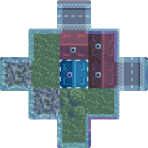

Spiel
- Was ist das?
- Ein Spiel. Es geht darum, eine Restaurantkette aufzubauen und sich gegenüber den anderen Mitspielern zu behaupten und möglichst viele Kunden anzulocken. Später soll man auch direkte Angriffe auf die Gegner ausüben können (Giftattacken, Gesundheitsamt,..)
- Der Anfang.. und jetzt?
- Fang klein an! Suche dir ein 220m²-Grundstück (ein Kästchen) für maximal 2000000 € mit vielen Kunden in der näheren Umgebung
- Wie groß ist denn die nähere Umgebung?
- Die "nähere Umgebung" eines Feldes beinhaltet die 12 Flächen, die sich neben dem besagten Feld, wie hier im Bild, befinden:
 - Wieviele Tische und so sollte man reinstellen?
- Da sieht man wieviele Kunden (K*) mit den Tischen und so versorgt werden können.
- Sind schon Angestellte dabei?
- Nein, die musst du noch "Einstellen".
- Kann man nur eine Küche besitzen?
- Ja, wenn der Platz nur für eine Küche reicht.
- Müssen alle Tische vom selben Typ sein ?!
- Ja.
- Ach Mist.
- Kannst sie für 75% des Kaufpreises verkaufen. Grundstücke werden zu 90% ihres Kaufwertes verkauft.
- Wie wird die Kundenanzahl berechnet?
-
Parkplätze:
Kundenanzahl = StraßendichteDerStadt * EinwohnerzahlDerStadt * RestaurantsInDerNähe * StraßenInDerNähe / GrößeDerUmgebung²
Restaurants:
Kundenanzahl = EigeneAttraktivität / (Eigene + GegnerischeAttraktivität) * KundenProStadt
Wenn das Restaurant dessen Kunden gerade berechnet werden voll geworden ist und einige Kunden übrig bleiben, so wird für die gesamte Stadt nochmal berechnet.
Bei jeder Berechnung gilt außerdem:
- Restaurants ohne freien Platz für Kunden und relativ hoher Attraktivität werden nicht betrachtet
- KundenProStadt beträgt 3*Stadtpopulation (Jeder bewohner geht pro Tick 3 mal essen)
- Vor der Verrechnung der Restaurants werden schon Kunden vom Parkplatz auf die Kundenanzahl draufgerechnet.
Somit hat man mit Parkplätzen einige Kunden bei sich gesichert.
(Parkplatzkunden sind von Außerhalb und können die Attraktivitäten nicht vergleichen)
- Wie entsteht die Attraktivität eines Restaurants?
- ( Küche + Tische + Sanitär + AnzahlGrünerFelderInUmgebung ) * ( 9/PreisFürEssen ) * ( 1 + 0.1*stars);
- Wie berechnet sich der Kontostand?
-
Der Kontostand wird bei jedem Tick so berechnet:Konto Zinssatz >1500000 € 0,0% >500000 € 0,01% >50000 € 0,02% >5000 € 0,025% >0 € 0,03%
NeuerKontostand = (1 + Zinssatz) * AlterKontostand - Energiekosten * 1€ + KundenAnzahl * Preis - LohnAllerAngestellten
- Wann gibt es immer einen Tick?
- Zzt. alle 2 Stunden, außer ich mach aus technischen Gründen einen oder mehrere Extra-Ticks.
- Wo krieg ich 'nen Logo her?
-
Zum Beispiel hier: PicSearch (Auf der verlinkten Seite Rechtsklick → Grafikadresse kopieren)
Das ist ungefähr so groß.Selbstgemachtes hochladen geht z.B. mit: Photobucket.com
Dein Bild braucht nicht breiter als 100px zu sein und sollte im Querformat vorliegen.
Attacken
- Graffiti
- Der Angreifer zahlt 500 € an die Graffiti-Artists. Diese sprühen ihr Werk an das entsprechende Restaurant. Der Inhaber sieht es und entfernt es sofort: das kostet 5000€.
- Kritiker
- Wenn die Gegnerischen Mitarbeiter insgesamt im Mittel eine Zuverlässigkeit geringer als 75% haben (also 3 von 4 Tomaten neben die Pizza geschmissen werden und nicht wegräumen), wird der Laden geschlossen und verkauft - ansonsten gibts Sterne für das attackierte Restaurant
Technik
- Kannst du mein Passwort lesen?
- Nein. Das wird MD5-verschlüsselt gespeichert.
- Habe einen Fehler gefunden, was nun?
- Wenn du ihn nicht behalten willst, schick ihn mir erstmal einfach per mail:
- Wie kann ich die Werbung blocken?
-
Firefox-Addon: Adblock plus
Folgendes zur Adblock-Liste hinzufügen: http://www*.kilu.net/extra/*